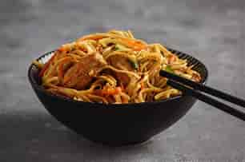

noodles

ingredients
- Noodles (250g, any type: instant, spaghetti, or rice noodles)
- Carrot (1 small, julienned)
- Bell pepper (1 medium, sliced)
- Cabbage (1 cup, shredded)
- Onion (1 small, finely chopped)
- Egg (1-2, beaten)
- Cooked chicken, shrimp, or tofu (100g, sliced or diced)
- Garlic and Ginger (2 cloves garlic, minced; 1 tsp ginger, grated)
- Soy Sauce (2-3 tbsp)
- Oyster Sauce (optional, 1 tbsp)
- Sesame Oil (1 tsp, optional for flavor)
- Salt and Pepper (to taste)
- Oil (2-3 tbsp, for stir-frying)
- Green Onions (2-3 stalks, chopped for garnish)Carrot (1 small, julienned)
steps to cook
- Boil water in a large pot.
- Add the noodles and cook according to the package instructions (usually 3-5 minutes).
- nDrain and rinse under cold water to prevent sticking. Set aside.
- Heat oil in a large wok or pan over medium-high heat.
- Add minced garlic and ginger. Stir-fry until fragrant (about 30 seconds).
- Add your choice of protein (e.g., eggs, chicken, shrimp, or tofu) to the wok.
- Stir-fry until cooked through. Remove and set aside.
- Add the onion and other vegetables (carrot, bell pepper, cabbage).
- Stir-fry for 2-3 minutes until slightly tender but still crisp.
- Add the cooked noodles to the wok.
- Pour in soy sauce, oyster sauce, sesame oil, and a pinch of salt and pepper.
- Toss everything together until the noodles are evenly coated.
- Add the cooked protein back to the pan.
- Mix everything well and cook for another 1-2 minutes.
- Sprinkle with chopped green onions.
- Serve hot and enjoy!
enjoy your meal